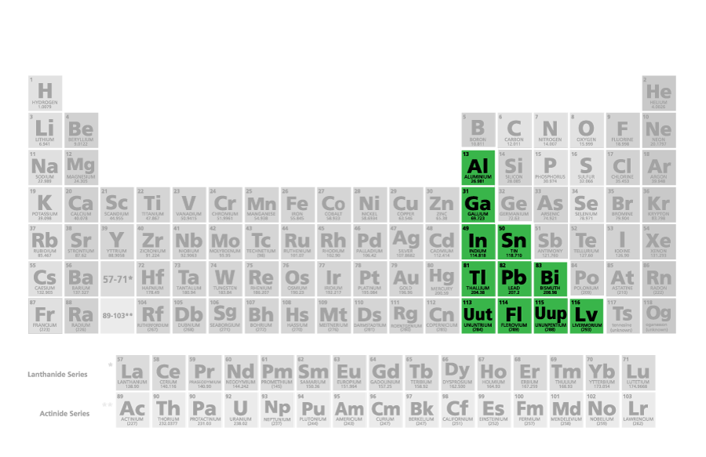

Os elementos de pós-transição são o alumínio (Al), gálio (Ga), índio (In), tálio (Tl), estanho (Sn), chumbo (Pb) e bismuto (Bi).
Como o nome já diz, esses elementos têm algumas das características dos metais de transição, mas são mais macios e piores condutores.
